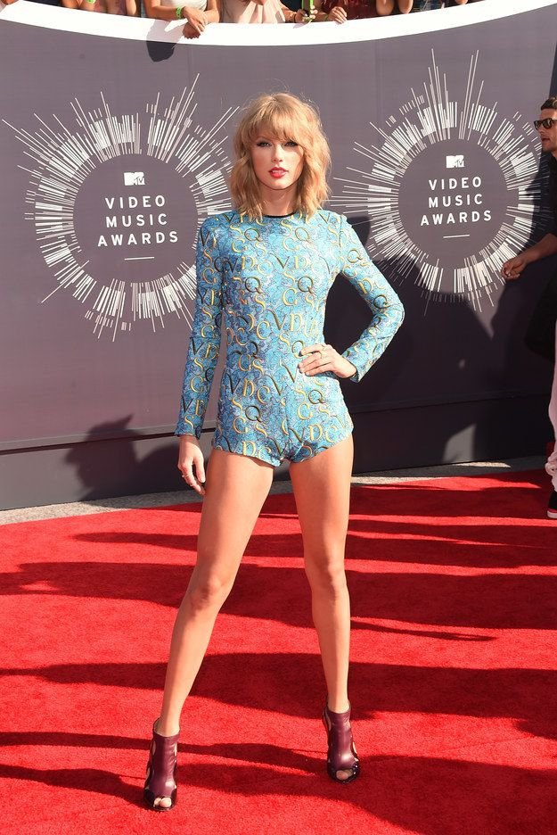

Taylor Swift: Um Icone Musical
Taylor Swift, nascida em 13 de dezembro de 1989, é uma artista multi-talentosa conhecida por sua música cativante e composições poderosas. Desde seus primeiros dias na música country até sua bem-sucedida transição para o pop, a carreira de Swift tem sido notável.
A capacidade de Swift de se conectar com seu público por meio de letras sinceras lhe rendeu uma enorme base de fãs. Seus álbuns, como "Fearless", "1989" e "Folklore", receberam aclamação da crítica e sucesso comercial.
Não apenas uma potência musical, Swift também é uma defensora das causas em que acredita. Ela usou sua plataforma para apoiar a educação, os esforços de socorro em desastres e a igualdade.
Com sua voz distinta, narrativa identificável e evolução contínua como artista, Taylor Swift continua sendo uma figura influente tanto na música quanto na cultura pop.